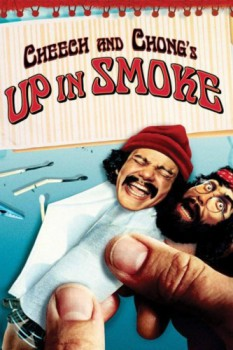

Country:United States, 86 minutes
Spoken languages:English
Genres:Adventure, Comedy
Director(s):Lou Adler
Writer(s):Tommy Chong, Cheech Marin
Video Codec:Unknown
Number: 1495

Certification:R
Storyline:
An unemployed pot-smoking slacker and amateur drummer, Anthony Stoner ditches his strict parents and hits the road, eventually meeting kindred spirit Pedro de Pacas. While the drug-ingesting duo is soon arrested for possession of marijuana, Anthony and Pedro get released on a technicality, allowing them to continue their many misadventures and ultimately compete in a rock band contest, where they perform the raucous tune "Earache My Eye."
Cast:
Cheech Marin (as Pedro), Tommy Chong (as Man), Strother Martin (as Mr. Stoner), Edie Adams (as Tempest Stoner), Harold Fong (as Chauffeur)
Medium: Media file,
Location: D:\Cheech and Chong\[1978] Cheech&Chong Up In Smoke.mp4
Loaned: No
Aspect ratio: Unknown